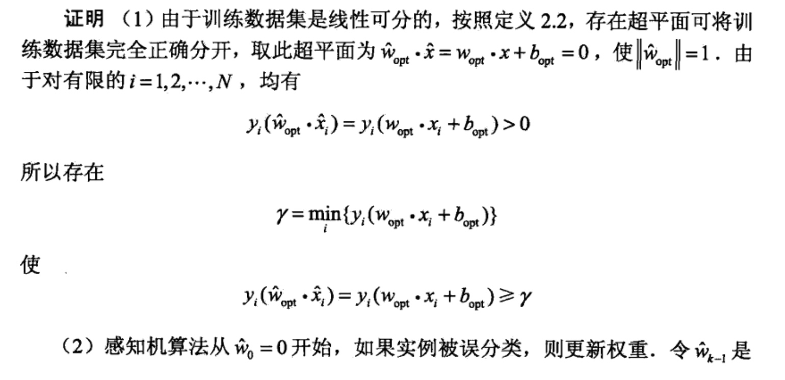
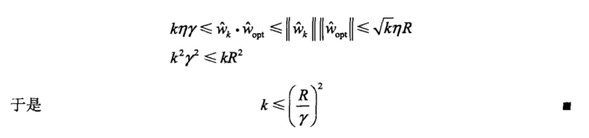

算法的收敛性主要是证明，对于线性可分数据集感知机学习算法原始形式收敛，即经过有限 次迭代可以得到一个将训练数据集完全正确划分的分离超平面及感知机模型。
将偏置b并入权重向量w，记做\(\hat{w} = (w^T,b)^T\)同样也将输入向量加以扩充，加进常数1，记做：\(\hat{x} = (x^T,1)^T\),这样，\(\hat{x}\in R^{n+1}\)，\(\hat{w}\in R^{n+1}\) 显然，\(\hat{w}*\hat{x}=w*x+b\)。

上述定理主要说明误分类的次数k是有上界的，算法具有收敛性。
下面是该定理的证明过程：




所以定理表明，误分类的次数
k是有上界的，经过有限次搜索可以找到将训练数据完全正确分开的分离超平面。也就是说，当训练数据集线性可分时，感知机学习算法原始形式迭代是收敛的。但是感知机学习算法存在许多解，这些解既依赖于初值的选择，也依赖于迭代过程中误分类点的选择顺序。为了得到唯一的超平面，需要对分离超平面增加约束条件。这就是线性支持向量机的想法。当训练集线性不可分时，感知机学习算法不收敛，迭代结果 就会发生震荡。
感知机学习算法的对偶形式
现在考虑感知机学习算法的对偶形式。感知机学习算法的原始形式和对偶形式与支持向量机学习算法的原始形式和对偶形式相对应。
对偶形式的基本思想是，将w和b表示为实例\(x_{i}\)和标记\(y_i\)的线性组合形式，通过求解其系数而求得w和b。不失一般性,在算法2.1中可假设初始值\(w_0,b_0\)均为0，对误分类点\((x_i,y_i)\)通过：
\(w\leftarrow w+ηy_ix_i\)
\(b\leftarrow b+ηy_i\)
逐步修改w，b，设修改n次，则w,b关于\((x_i,y_i)\)的增量分别是\(α_ix_iy_i和α_iy_i\)这里\(α=n_iη\)。这样，从学习过程不难看出，最后学习到的w,b可以分别表示为：
这里，\(\alpha_i\geq0,i=1,2,...N,当\eta=1时\)，表示第i个实例点由于误分而进行更新的次数。实例点更新次数越多，意味着它距离分离超平面越近，也就越难正确分类。换句话说，这样的实例对学习结果影响最大。
下面对照原始形式来叙述感知机学习算法的对偶形式。


对偶形式中训练实例仅以内积的形式出现。为了方便，可以预先将训练集中实例间的内积计算出来并以矩阵的形式存储，这个矩阵就是所谓的Gram矩阵。
\(G = [x_i * x_j]_{N*N}\)
同样根据该算法有例题如下：


对照例2.1，结果一致，迭代步骤也是互相对应的。
与原始形式一样，感知机学习算法的对偶形式迭代是收敛的。